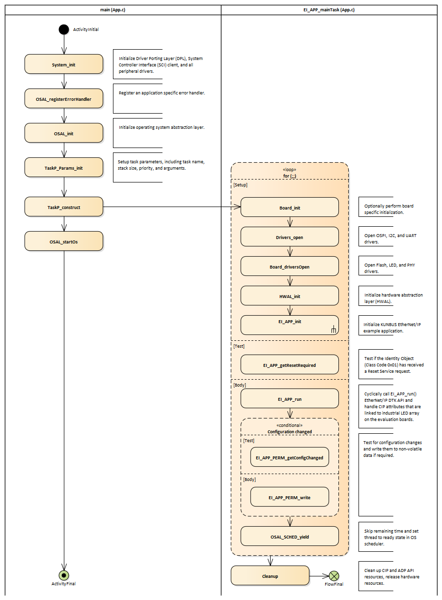
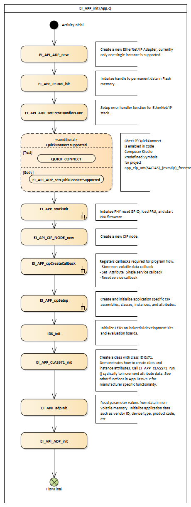
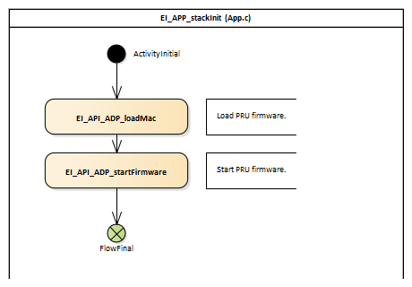
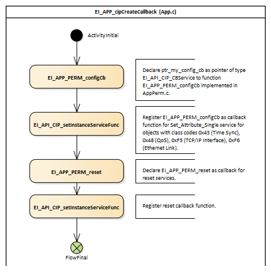
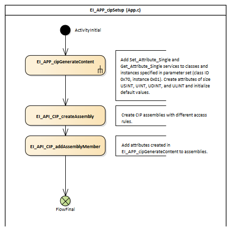
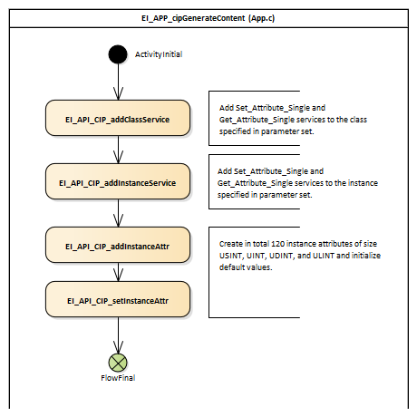

|
EtherNet/IP™ Adapter
1.04.00
User Reference Manual
|


|
|
EtherNet/IP™ Adapter
1.04.00
User Reference Manual
|
|
This section dissects the example application that is shipped as part of the EtherNet/IP Adapter SDK. The example discussed here does not cover CIP Sync functionality but fucuses on a Communication Apater that provides digital I/O functionality via an LED array available on the evaluation board.
The example itself is primarily implemented in the file App.c with board specific functionality located in files AppPerm.c and Board.c. Additional example code is contained in the file AppClass71.c an the corresponding header file demontrating the creation of classes, instances, and attributes and mofifying their parameter values.
The primary task of main is the initialization of the Texas Instruments driver porting layer (DPL), the system controller interface (SCI), and all the peripheral drivers. After this intial initialization, a task is constructed that implements the main CIP and EtherNet/IP functionality.
This task, EI_APP_mainTask, first opens all peripheral drivers, and then calls EI_APP_init to set up the EtherNet/IP Adapter. After the initialization, it enters a loop that cyclically processes the Ethernet/IP stack.
Both the main entry point and the EI_APP_mainTask task are implemented in App.c.

In the EI_APP_init inialization function, calls to the EtherNet/IP adapter API are made the create the inter structures required by the EtherNet/IP stack. EI_API_ADP_new creates the new adapter, and in EI_API_ADP_setErrorHandlerFunc the stack error handler is registered.
Based on the definition of QUICK_CONNECT in the predefined symbols section of Code Composer Studio support for the QuickConnect functionality will become available.
After further application specific initialization, a new CIP node is created by calling EI_API_CIP_NODE_new. Note that this function has to be called after EI_API_ADP_new.
EI_APP_init is implemented in App.c.

The function EI_APP_stackInit performs initialization and starting of the PRU firmware. This function is implemented in p App.c.

EI_APP_cipCreateCallback creates callback functions for non-volatile data storage and for reset services. Note that the callback function itself taking care of non-volatile data is implemented in AppPerm.c.

Finally CIP specific content, such as classes, instances, attributes, and assemblies, is created in EI_APP_cipSetup. Together with EI_APP_cipGenerateContent this function will be that requires adaptation by the end user, depending on the device functionality that is to be implemented.
Also the created attributes are added to the assemblies for cyclic CIP IO data exchange.


 1.9.2
1.9.2